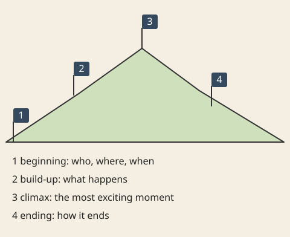

Eine Geschichte planen und schreiben
Mit einem KI-Tutor lernen
Ein KI-Tutor erklärt dir diese Seite und hilft dir bei den Aufgaben. Wähl deinen Assistenten:
Mit Claude öffnen Mit ChatGPT öffnen Mit Mistral Vibe öffnen
Du nutzt dein eigenes Konto beim Anbieter. Der Assistent ist kein Angebot von lernapps.net: lernapps liefert nur Inhalte und Aufgaben. Die Wahl gilt für alle Seiten, nur auf diesem Gerät.
Erst planen, dann schreiben

Von links: Sophie (Zöpfe), Peter (gelbe Jacke), Ellie (roter Pferdeschwanz), Amir (Brille) und Mr Hill (graue Haare). An der Wand hängen links der Geschichtenberg und rechts die story map.
Quelle: eigene Zeichnung. Lizenz: CC-BY-4.0.Es ist Donnerstag in der Geschichtenwoche. Heute schreibt jedes Kind eine eigene Geschichte. Mr Hill sagt: „First the plan, then the story.“ Sophie nimmt ein Blatt mit einem leeren Geschichtenberg. Sie hat einen Zettel mit Stichwörtern: „Amir · on a farm · a hot Sunday“. Sie überlegt, wohin er gehört.
Aufgabe
Lösung
beginning richtige Antwort
Figur, Ort und Zeit stehen am Anfang.
build-up
Im build-up passiert etwas, das die Geschichte spannend macht.
climax
Der climax ist der spannendste Moment, nicht Figur, Ort und Zeit.
ending
Das Ende sagt, wie die Geschichte ausgeht.
Der Anfang sagt, wer, wo und wann.
Mehr dazu: Lernlandkarte Englisch · Eine Geschichte schreiben
Das kannst du danach: Du planst eine kurze Geschichte am Geschichtenberg. Dann schreibst du sie mit Anfang, Mitte und Ende im simple past auf.
Dieses Wort ist neu auf dem Klassenzimmer-Poster.
| Wort | Bedeutung |
|---|---|
| kite | Drachen |
Der Geschichtenberg als Plan
Sophie plant ihre Geschichte am Geschichtenberg. Zu jedem Fähnchen schreibt sie eine Planzeile mit Stichwörtern. So sieht ihre Vorlage aus.

Die Planvorlage am Geschichtenberg. Jede Zeile bekommt Stichwörter.
Quelle: eigene Zeichnung. Lizenz: CC-BY-4.0.Das ist Sophies Plan für eine kurze Geschichte:
- 1 beginning: Ellie, her grandpa, on the hill, a sunny Saturday
- 2 build-up: fly a kite
- 3 climax: kite flies away
- 4 ending: a boy finds the kite
Die Stichwörter sind kurz. Daraus schreibt Sophie je Station einen Satz im simple past: „On a sunny Saturday Ellie and her grandpa were on the hill. They flew a kite. Suddenly the kite flew away. Finally a boy found it.“
Merke
Erst planen, dann schreiben. Der Anfang (beginning) sagt, wer, wo und wann. Der Aufbau (build-up) sagt, was passiert, bis es spannend wird. Der climax ist der spannendste Moment, das ending sagt, wie es ausgeht. Aus jeder Planzeile wird mindestens ein Satz im simple past. Das Wort suddenly (plötzlich) leitet oft den climax ein, wenn etwas Unerwartetes passiert. Das Wort finally (schließlich) passt zum ending.
Plane Station für Station und schreibe die Sätze
Aufgabe
Lösung
Richtige Antwort: Ellie, the market, a sunny Friday – beginning; Ellie hears a funny noise – build-up; a dog jumps out of a big box – climax; Ellie takes the dog home – ending
Am Anfang stehen who, where und when. Der climax ist der spannendste Moment.
Mehr dazu: Lernlandkarte Englisch · Eine Geschichte schreiben
Aufgabe
Lösung
Der Ort fehlt
Der Ort steht da, the park.
Es gibt keinen Höhepunkt richtige Antwort
Beim climax passiert nichts Spannendes.
Das Ende ist offen
Das Ende steht da, he eats dinner.
Am Gipfel muss etwas Spannendes passieren.
Mehr dazu: Lernlandkarte Englisch · Eine Geschichte schreiben
Aufgabe
Lösung
who richtige Antwort
Es steht keine Figur da.
where richtige Antwort
Es steht kein Ort da.
when
A cold Tuesday sagt, wann.
the climax
Der Höhepunkt kommt später, nicht im Anfang.
Der Anfang nennt Figuren, Ort und Zeit.
Mehr dazu: Lernlandkarte Englisch · Eine Geschichte schreiben
Aufgabe
Sophie schreibt zu jeder Station einen Satz. Schreibe die vier Sätze im simple past.
- beginning: one sunny morning · Ellie · her dog Bella · walk · in the forest
- build-up: they · hear · a noise
- climax: suddenly · Bella · run away
- ending: finally · Ellie · find · Bella · under a tree
Lösung
- One sunny morning Ellie and her dog Bella walked in the forest. (auch richtig: One sunny morning Ellie and her dog Bella walked through the forest.; One sunny morning Ellie walked her dog Bella in the forest.; One sunny morning Ellie walked her dog Bella through the forest.; One sunny morning Ellie walked in the forest with her dog Bella.; Ellie and her dog Bella walked in the forest one sunny morning.)
- They heard a strange noise in the forest. (auch richtig: They heard a strange noise.; They heard a loud noise in the forest.; They heard a loud noise.; They heard a funny noise in the forest.; They heard a funny noise.; They heard a big noise in the forest.; They heard a big noise.; They heard a noise in the forest.; They heard a noise.)
- Suddenly Bella ran away.
- Finally Ellie found Bella under a tree. (auch richtig: Finally Ellie found Bella under the tree.)
Aufgabe
Hör zu und schreibe, was du hörst.
- KI
- KI
- KI
Lösung
- The little boat moved across the water.
- Suddenly something moved in the kitchen.
- In the end, everybody went home happy.
Plane deinen Berg und schreibe deine Geschichte
Aufgabe
Hör zu, sprich nach und nimm dich auf. Vergleiche dann mit dem Original.
Tipp
Hör zu. Sprich dann langsam nach.
- Where does your story begin?KI
- What happens in the middle?KI
- When did your story happen?KI
Zum Aufnehmen braucht diese Aufgabe JavaScript. Die Beispiele kannst du auch ohne anhören.
Lösung
- Where does your story begin?
- What happens in the middle?
- When did your story happen?
Offene Aufgabe
Plane deinen eigenen Geschichtenberg. Schreibe vier Planzeilen mit Stichwörtern, von 1 beginning bis 4 ending. Schreibe dann deine Geschichte in vier bis sechs Sätzen im simple past.
Tipp
Die App bewertet nicht. Prüfe anhand der Punkte.
Eine gute Antwort enthält:
Lösung
1 beginning: Amir, his friend Peter, by the river, a warm Sunday 2 build-up: see a boat 3 climax: the boat moves 4 ending: Peter stops it
On a warm Sunday Amir and his friend Peter sat by the river. They saw a small boat. Suddenly the boat started to move. Peter jumped up and ran after it. Finally he stopped the boat and they went home.
Wie es weitergeht
Sophie liest Amir ihre Geschichte vor. Amir fragt: „And then?“ Auf der nächsten Seite lernst du, eine Geschichte fortzusetzen oder anders enden zu lassen.